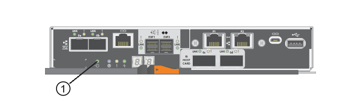
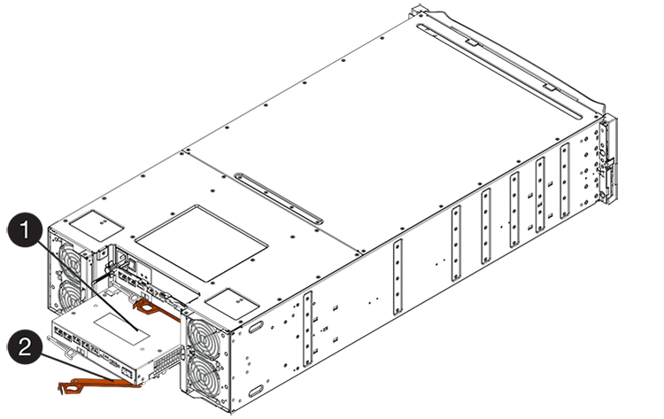
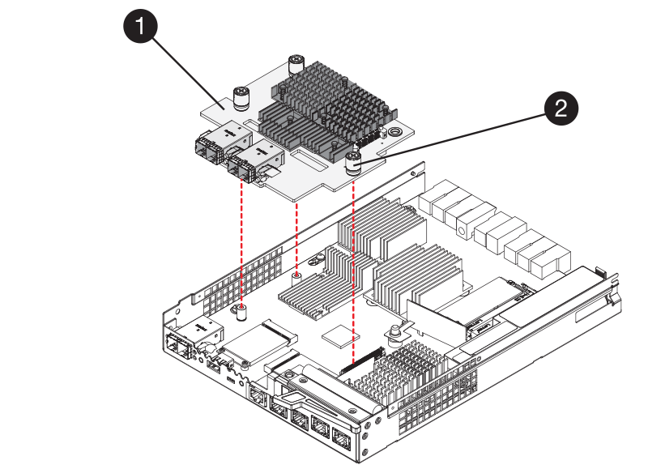
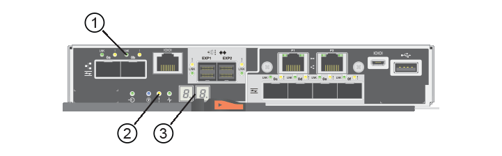

Release notes
Release notes
Add E5700 host interface card (HIC)
 Suggest changes
Suggest changes
You can add a host interface card (HIC) to E5700 controller canisters with baseboard host ports. This addition increases the number of host ports in your storage array and provides additional host protocols.
When you add HICs, you must power off the storage array, install the HIC, and reapply power.
-
Schedule a downtime maintenance window for this procedure. The power must be off when you install HICs, so you cannot access data on the storage array until you have successfully completed this procedure. (In a duplex configuration, both controllers must have the same HIC configuration when they are powered on.)
-
Make sure you have the following:
-
One or two HICs, based on whether you have one or two controllers in your storage array. The HICs must be compatible with your controllers.
-
New host hardware installed for the new host ports, such as switches or host bus adapters (HBAs).
-
All cables, transceivers, switches, and host bus adapters (HBAs) needed to connect the new host ports.
For information about compatible hardware, refer to the NetApp Interoperability Matrix and the NetApp Hardware Universe.
-
Labels to identify each cable that is connected to the controller canister.
-
An ESD wristband, or you have taken other antistatic precautions.
-
A #1 Phillips screwdriver.
-
A management station with a browser that can access SANtricity System Manager for the controller. (To open the System Manager interface, point the browser to the controller's domain name or IP address.)
-
Step 1: Prepare to add HIC
Prepare to add a HIC by backing up the storage array's configuration database, collecting support data, and stopping host I/O operations. Then, you can power down the controller shelf.
-
From the Home page of SANtricity System Manager, ensure that the storage array has Optimal status.
If the status is not Optimal, use the Recovery Guru or contact technical support to resolve the problem. Do not continue with this procedure.
-
Back up the storage array's configuration database using SANtricity System Manager.
If a problem occurs during this procedure, you can use the saved file to restore your configuration. The system will save the current state of the RAID configuration database, which includes all data for volume groups and disk pools on the controller.
-
From System Manager:
-
Select .
-
Select Collect Configuration Data.
-
Click Collect.
The file is saved in the Downloads folder for your browser with the name, configurationData-<arrayName>-<dateTime>.7z.
-
-
Alternatively, you can back up the configuration database by using the following CLI command:
save storageArray dbmDatabase sourceLocation=onboard contentType=all file="filename";
-
-
Collect support data for your storage array using SANtricity System Manager.
If a problem occurs during this procedure, you can use the saved file to troubleshoot the issue. The system will save inventory, status, and performance data about your storage array in a single file.
-
Select .
-
Select Collect Support Data.
-
Click Collect.
The file is saved in the Downloads folder for your browser with the name, support-data.7z.
-
-
Ensure that no I/O operations are occurring between the storage array and all connected hosts. For example, you can perform these steps:
-
Stop all processes that involve the LUNs mapped from the storage to the hosts.
-
Ensure that no applications are writing data to any LUNs mapped from the storage to the hosts.
-
Unmount all file systems associated with volumes on the array.

The exact steps to stop host I/O operations depend on the host operating system and the configuration, which are beyond the scope of these instructions. If you are not sure how to stop host I/O operations in your environment, consider shutting down the host. 
Possible data loss — If you continue this procedure while I/O operations are occurring, the host application might lose access to the data because the storage is not accessible.
-
-
If the storage array participates in a mirroring relationship, stop all host I/O operations on the secondary storage array.
-
Wait for any data in cache memory to be written to the drives.
The green Cache Active LED on the back of each controller is on when cached data needs to be written to the drives. You must wait for this LED to turn off.

(1) Cache Active LED
-
From the Home page of SANtricity System Manager, select View Operations in Progress. Wait for all operations to complete before continuing with the next step.
-
Power down the controller shelf.
-
Turn off both power switches on the controller shelf.
-
Wait for all LEDs on the controller shelf to turn off.
-
Step 2: Remove controller canister
Remove the controller canister so you can add the new HIC.
-
Label each cable that is attached to the controller canister.
-
Disconnect all the cables from the controller canister.
To prevent degraded performance, do not twist, fold, pinch, or step on the cables. -
Confirm that the Cache Active LED on the back of the controller is off.
The green Cache Active LED on the back of the controller is on when cached data needs to be written to the drives. You must wait for this LED to turn off before removing the controller canister.
(1) Cache Active LED
-
Squeeze the latch on the cam handle until it releases, and then open the cam handle to the right to release the controller canister from the shelf.
The following figure is an example of an E5724 controller shelf:

(1) Controller canister
(2) Cam handle
The following figure is an example of an E5760 controller shelf:

(1) Controller canister
(2) Cam handle
-
Using two hands and the cam handle, slide the controller canister out of the shelf.
Always use two hands to support the weight of a controller canister. If you are removing the controller canister from an E5724 controller shelf, a flap swings into place to block the empty bay, helping to maintain air flow and cooling.
-
Turn the controller canister over, so that the removable cover faces up.
-
Place the controller canister on a flat, static-free surface.
Step 3: Install a HIC
Install the host interface card (HIC) to increase the number of host ports in your storage array.
|
|
Possible loss of data access — Never install a HIC in an E5700 controller canister if that HIC was designed for another E-Series controller. In addition, if you have a duplex configuration, both controllers and both HICs must be identical. The presence of incompatible or mismatched HICs will cause the controllers to lock down when you apply power. |
-
Unpack the new HIC and the new HIC faceplate.
-
Press the button on the cover of the controller canister, and slide the cover off.
-
Confirm that the green LED inside the controller (by the DIMMs) is off.
If this green LED is on, the controller is still using battery power. You must wait for this LED to go off before removing any components.

(1) Internal Cache Active
(2) Battery
-
Using a #1 Phillips screwdriver, remove the four screws that attach the blank faceplate to the controller canister, and remove the faceplate.
-
Align the three thumbscrews on the HIC with the corresponding holes on the controller, and align the connector on the bottom of the HIC with the HIC interface connector on the controller card.
Be careful not to scratch or bump the components on the bottom of the HIC or on the top of the controller card.
-
Carefully lower the HIC into place, and seat the HIC connector by pressing gently on the HIC.
Possible equipment damage — Be very careful not to pinch the gold ribbon connector for the controller LEDs between the HIC and the thumbscrews. 
(1) Host interface card (HIC)
(2) Thumbscrews
-
Hand-tighten the HIC thumbscrews.
Do not use a screwdriver, or you might over tighten the screws.
-
Using a #1 Phillips screwdriver, attach the new HIC faceplate to the controller canister with the four screws you removed previously.

Step 4: Reinstall controller canister
Reinstall the controller canister into the controller shelf after installing the new HIC.
-
Turn the controller canister over, so that the removable cover faces down.
-
With the cam handle in the open position, slide the controller canister all the way into the controller shelf.
The following figure is an example of an E5724 controller shelf:
(1) Controller canister
(2) Cam handle
The following figure is an example of an E5760 controller shelf:
(1) Controller canister
(2) Cam handle
-
Move the cam handle to the left to lock the controller canister in place.
-
Reconnect all the cables you removed.
Do not connect data cables to the new HIC ports at this time. -
(Optional) If you are adding HICs to a duplex configuration, repeat all steps to remove the second controller canister, install the second HIC, and reinstall the second controller canister.
Step 5: Complete HIC addition
Check the controller LEDs and seven-segment display, and then confirm that the controller's status is Optimal.
-
Turn on the two power switches at the back of the controller shelf.
-
Do not turn off the power switches during the power-on process, which typically takes 90 seconds or less to complete.
-
The fans in each shelf are very loud when they first start up. The loud noise during start-up is normal.
-
-
As the controller boots, check the controller LEDs and seven-segment display.
-
The seven-segment display shows the repeating sequence OS, Sd, blank to indicate that the controller is performing Start-of-day (SOD) processing. After a controller has successfully booted up, its seven-segment display should show the tray ID.
-
The amber Attention LED on the controller turns on and then turns off, unless there is an error.
-
The green Host Link LEDs remain off until you connect the host cables.
The figure shows an example controller canister. Your controller might have a different number and a different type of host ports. 
(1) Host Link LEDs
(2) Attention LED (Amber)
(3) Seven-segment display
-
-
From SANtricity System Manager, confirm that the controller's status is Optimal.
If the status is not Optimal or if any of the Attention LEDs are on, confirm that all cables are correctly seated, and check that the HIC and the controller canister are installed correctly. If necessary, remove and reinstall the controller canister and the HIC.
If you cannot resolve the problem, contact technical support. -
If the new HIC ports require SFP+ transceivers, install these SFPs.
-
If you installed a HIC with SFP+ (optical) ports, confirm the new ports have the host protocol you expect.
-
From SANtricity System Manager, select Hardware.
-
If the graphic shows the drives, click Show back of shelf.
-
Select the graphic for either Controller A or Controller B.
-
Select View settings from the context menu.
-
Select the Host Interfaces tab.
-
Click Show more settings.
-
Review the details shown for the HIC ports (the ports labelled e0x or 0x in HIC Location slot 1) to determine if you are ready to connect the host ports to the data hosts:
-
If the new HIC ports have the protocol you expect:
You are ready to connect the new HIC ports to the data hosts; go to the next step.
-
If the new HIC ports do not have the protocol you expect:
You must apply a software feature pack before you can connect the new HIC ports to the data hosts. See Change E5700 host protocol. Then, connect the host ports to the data hosts and resume operations.
-
-
-
Connect the cables from the controller's host ports to the data hosts.
If you need instructions for configuring and using a new host protocol, refer to the Linux express configuration, Windows express configuration, or VMware express configuration.
The process of adding a host interface card to your storage array is complete. You can resume normal operations.